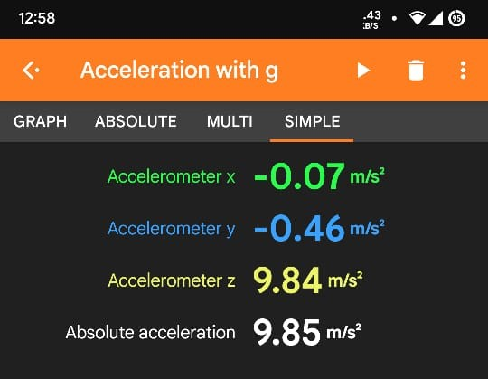
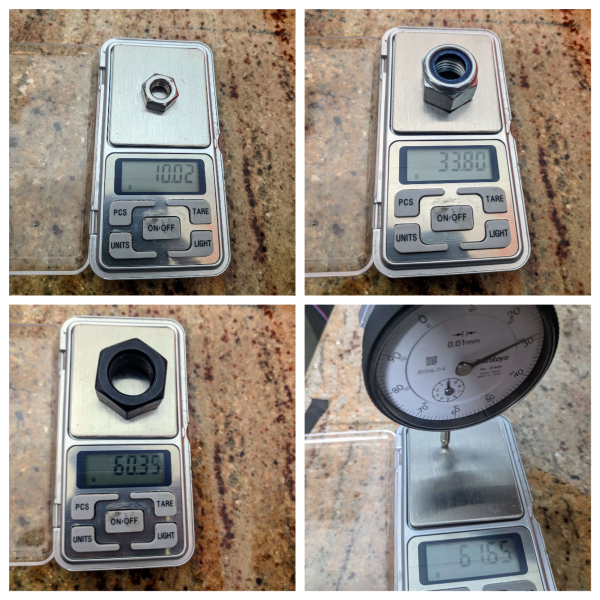
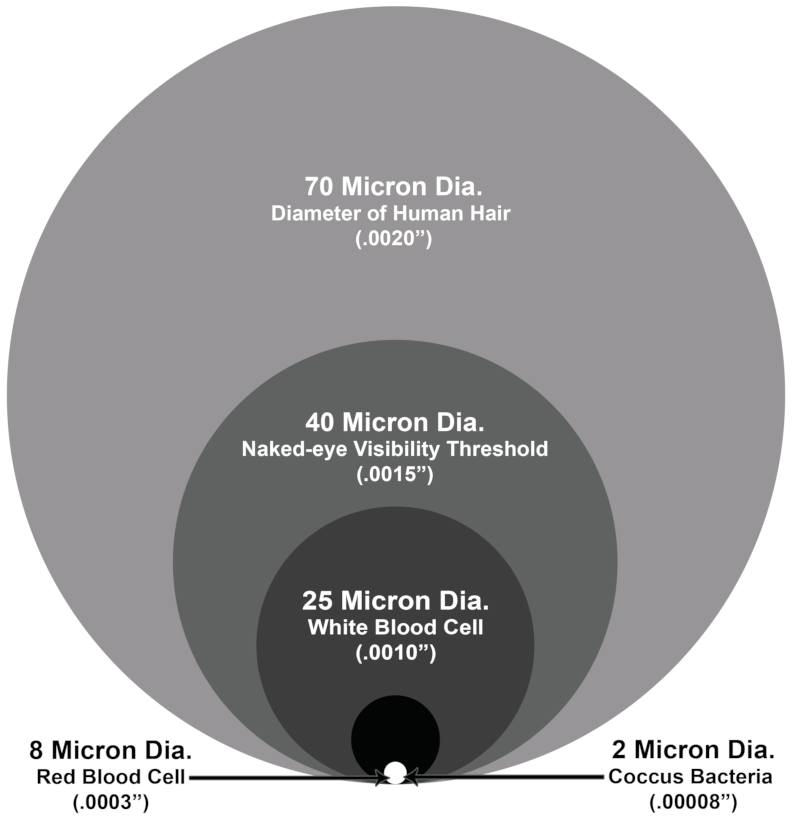

Designing, validating and testing compliant mechanisms
The objective was to create the slimmest CR2032 battery holder that could be used with the pocket UV sensor that I have in mind. I looked into several mounting and older models of Casio and Citizen pocket radios, which used to be powered by CR2032 batteries. None of the designs satisfied me. The typical PCB-mounted battery holders can be up to 4 mm thick and pointy. We decided to employ a compliant mechanism to hold the battery after doing some study and talking with my brother. I assumed the battery couldn't be tightly clamped by a compliant device.
\(6-C = R\)
\(C =\) Number of Non-Redudant Constraint lines
\(R =\) Number of degrees of freedom
I designed a simple non-symmetrical flexure and printed it on my 3D printer. I was not expecting it to hold the battery ( I lost the pictures and the part that was printed). The clamping force on the battery was surprisingly good. After this, I was convinced that a flexure can hold the battery on a PCB. By looking at the clamping force generated by 3D print we decided to use two PCBs sandwiched together as the negative terminal should have physical contact.

mass of the M16 nut \(m_{1} = 0.0338kg \)
mass of the M20 Bolt \(m_{2} = 0.06035kg\)
mass of the tapered coin \(m_{c}= 0.00165kg\)
acceleration due to gravity, \(g = 9.85m/s^2\) ;(determined from phone's acceleretrometer)
Dial indicator's measuring force determined \(m_{d}=\sim 0.062 kg\) ; Mitutoyo website mentions from 0.4-1.4N 
Total mass added to componsate the spring force, \(m_{s}=0.062kg\) ; \(m_{s}=m_{c}+m_{2}\) given by [\(0.062kg=0.00165kg+ 0.06305kg\)]
Force exerted by M16 nut which is equal to \(F_{1}=0.3329m/s^2\) ; \(F_{1}= m_{1}\times g\) given by [\(0.33293=9.85\times0.338\)]
The total force being exerted on each arm \(F_{a}= 0.1109 m/s^2\) ; \(F_{a}= F_{1}\div3\)
Resolving this force \(F_{a}\) in horizontal direction, \(F_{a} = 0.107N\)
Total displacement in vertical direction experimentally, \(\Delta d_{exp}=0.20mm\)
When force of \(F_{s}= 0.107N\) was applied both in simluation and experimentally, the displacements are given below.
Total displacement of each arm experimentally in horizontal direction \(\Delta a_{exp}= 0.05359mm\) , which is given by \(\ 0.20mm \times tan(15^{\circ})= 0.053589mm \)
Total displacement of each arm in simulation in horizontal direction was \(\Delta a_{sim}= 0.07086mm\), this was solved using FEA.
In conclusion the total error that observed is \(20\) micrometers.A large number in metrology world. My dial indicator has least count of \(10\) micrometers.
